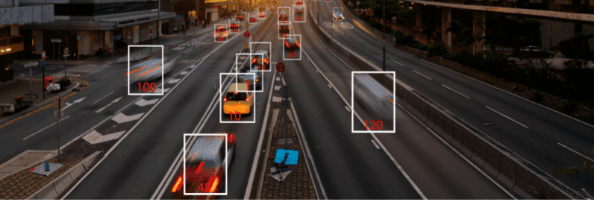

 We humans can easily distinguish between places, objects, and people based on images, but computers have traditionally had difficulties with understanding these images. Thanks to the new image recognition technology, we now have specific software and applications that can interpret visual information. As always, let’s start with the basics. From time to time, you can hear terms like “Computer Vision” and or “Image Recognition”. These terms are synonymous, but there is a slight difference between the two terms. Let us explain. Computer vision is a wide area in which deep learning is used to perform tasks such as image processing, image classification, object detection, object segmentation, image coloring, image reconstruction, and image synthesis. In computer vision, computers or machines are created to reach a high level of understanding from input digital images or video to automate tasks that the human visual system can perform. Whereas, image recognition is a field of computer vision that interprets images to aid decision-making. Image recognition is the final stage of image processing, which is one of the most important tasks of computer vision.
Now, a few words about how image recognition works. Image recognition algorithms make image recognition possible. The first step here is gathering and organizing the data. Data organization means classifying each image and distinguishing its physical characteristics. Unlike humans, computers perceive a picture as a vector or raster image. So after the constructs depicting objects and features of the image are created, the computer analyzes them. Therefore, the correct collection and organization of data are essential for training the image recognition model, because if the quality of the data is discredited at this stage, it will not be able to recognize patterns at a later stage. The second step of the image recognition process is building a predictive model. The classification algorithm has to be trained carefully, otherwise, it won’t be able to deliver its function. Image recognition algorithms use deep learning datasets to distinguish patterns in images. These datasets consist of hundreds of thousands of tagged images. The algorithm looks through these datasets and learns what the image of a particular object looks like. When everything is done and tested, you can enjoy the image recognition feature.
Banks are increasingly using facial recognition to confirm the identity of the customer, who uses Internet banking. Banks also use facial recognition ” limited access control ” to control the entry and access of certain people to certain areas of the facility. For example, the Spanish Caixabank offers customers the ability to use facial recognition technology, rather than pin codes, to withdraw cash from ATMs.
Today, computer vision has benefited enormously from deep learning technologies, excellent development tools, and image recognition models, comprehensive open-source databases, and fast and inexpensive computing. Image recognition has found wide application in various industries and enterprises, from self-driving cars and electronic commerce to industrial automation and medical imaging analysis. And now you have a detailed guide on how to use AI in image processing tasks, so you can start working on your project. However, in case you still have any questions (for instance, about cognitive science and artificial intelligence), we are here to help you. From defining requirements to determining a project roadmap and providing the necessary machine learning technologies, we can help you with all the benefits of implementing image recognition technology in your company. As always.